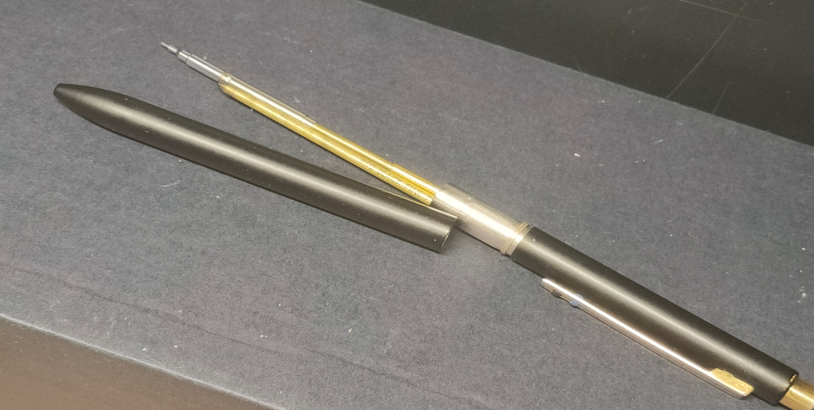
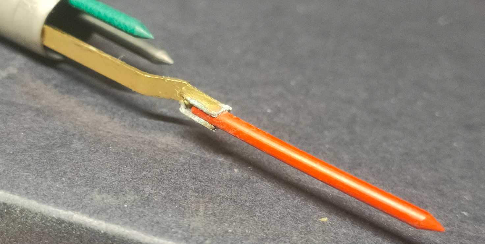
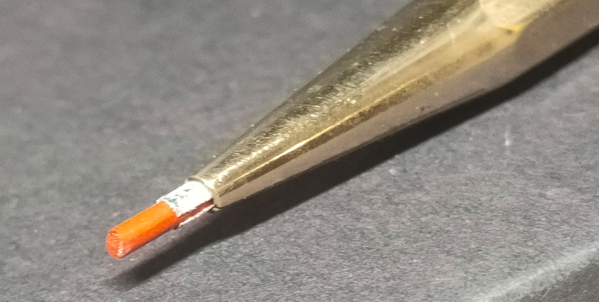
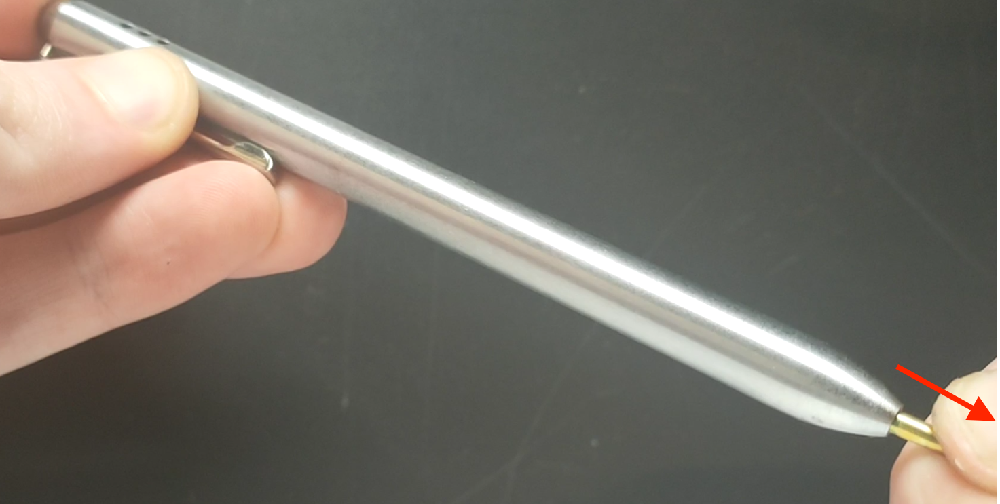
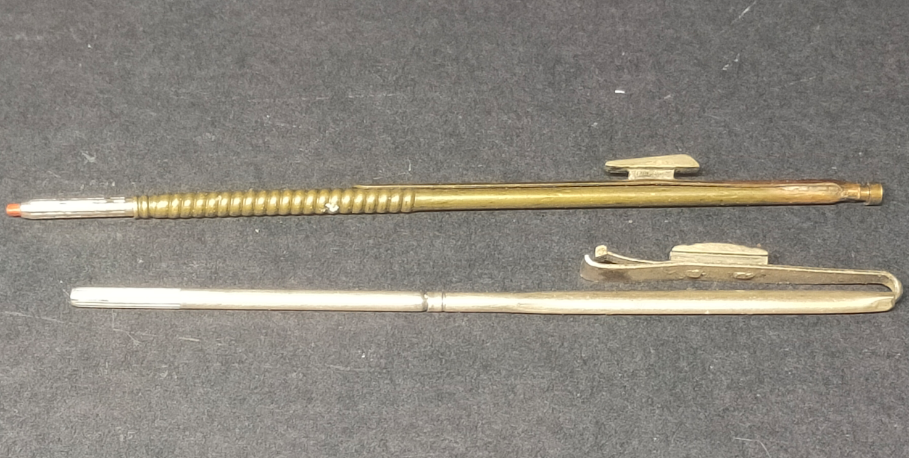
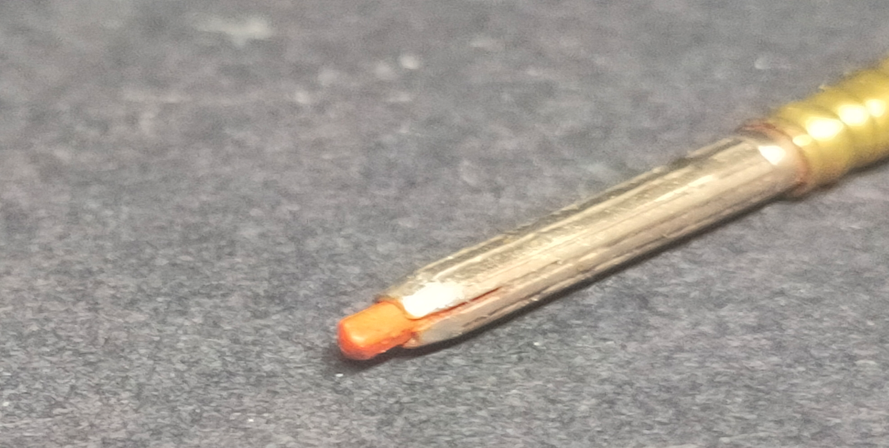
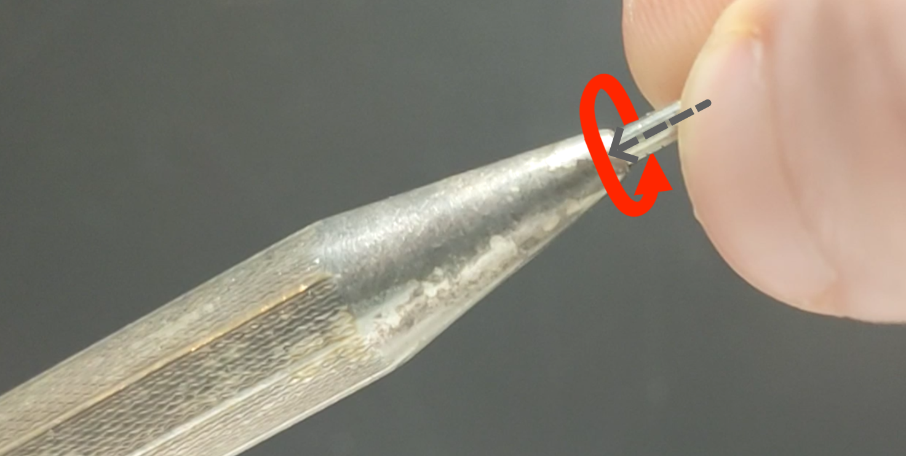

Wie wechselt man die Mine bei einem alten Mehrfarbstift?
Anleitung zum Nachfüllen, Wechseln oder Entfernen verschiedener Minen bei alten Mehrfarbstiften, Vierfarbbuntstiften, 4-farb Stiften, 4 Farben Kugelschreibern, etc.
Stand: 23.03.2026
1.
Wenn Ihr Stift sichtlich segmentiert ist, versuchen Sie zunächst, die Hälften zu verdrehen oder auseinanderzuziehen. Dies aber nur mit moderater Kraft.
Lassen sich die Stifthälften erfolgreich auseinanderschrauben oder auseinanderziehen, handelt es sich wahrscheinlich um einen Mehrfarb-Kugelschreiber, oder eine Kugelschreiber-Druckbleistift-Kombination wie dem Chromatic oder Zebra Sharbo.
Der Wechsel der Minen erfolgt wie bei ihren modernen Äquivalenten und ist nicht erklärungsbedürftig.

2.
Sehr alte Stifte mit Kappendrehvorschub (also die hinten an einem Drehknauf gedreht werden), oder noch ältere Schieberstifte mit kontinuierlichem rastfreiem Vorschub, die sich ebenfalls auf diese Weise öffnen lassen, erfordern 2mm-Buntstiftminen.
Diese werden einfach per Hand in das Röhrchen gesteckt und wieder herausgezogen, wie es auch später mit Kugelschreiberminen gemacht wurde.

2.a.Ein Sonderfall sind manche japanische Stifte, bei welchen eine lineare 'Auswurfhilfe' das Herausnehmen von Minenresten einfach macht.
 2.b.
2.b.Bei anderen Stiften dieser Art sind manchmal die Minen von hinten zugänglich, sodass per Hilfsmittel Reste herausgedrückt werden können. Ist das nicht der Fall, hilft nur Auskratzen, Ausbohren oder Einweichen in z.B. warmem Wasser.
2.c.
Nicht alle Stifte mit Drehvorschub lassen sich aber öffnen. Dann ist ein genauer Blick auf die Stiftöffnung nötig.
Dafür muss die Mine so weit vorgeschoben werden, bis der Minenhalter sichtbar wird. Beim Drehstift bedeutet es viele Umdrehungen.
Ist der Minenhalter glatt umschließend, meist einfach geschlitzt, dann erfolgt der Wechsel wie bei 2, wofür der Minenhalter möglichst weit durch Drehen des Drehknaufs oder Schieben des Schiebers aus der Schreiböffnung vorgebracht werden sollte.

3.
Stifte mit Druckknopf, Druckkappe, oder Schiebern mit Rastmechanismus haben meist die folgenden Eigenschaften. Kugelschreiber sind für gewöhnlich mit D1-Minen und Buntstifte mit 1.18mm-Minen ausgestattet.
Zuerst muss der Druckknopf, die Druckkappe, oder die Schieber jeweils so weit wie möglich nach vorne gebracht werden.
Für diesen Zweck haben manche Stifte zusätzliche Einraststufen.
3.a.
Erscheint nichts, handelt es sich wahrscheinlich um einen Mehrfarbkugelschreiber, dessen Mine fehlt.
Schieben Sie den Schieber, Druckknopf oder die Kappe so weit vor, wie es geht.
Nun nehmen Sie eine D1-Kugelschreibermine und führen sie vorsichtig durch die Schreiböffnung. Dabei müssen Sie 'blind' vorgehen, anders als bei den in 2c beschriebenen Stiften. Das Röhrchen lässt sich aber leicht ertasten. Nun einfach die Mine weiter reindrücken, bis nur noch die Spitze der Mine herausschaut.


3.b.
Erscheint eine Kugelschreibermine, so schieben Sie wie eben erwähnt die Mine weit vor, fassen die Mine mit Ihren Fingern oder einer Zange, wo Sie es können, und ziehen kräftig. Manchmal erfordert es sehr viel Kraft. Das Einsetzen der neuen Mine erfolgt wie oben beschrieben.

3.c.
Achtung! Nicht bei jedem Stift sind die Kugelschreiberminen auch austauschbar. Es existieren Einwegstifte, deren Minen mit dem Minenhalter fest verbunden sind. Wenn Sie also Ihres Ermessens nach zu viel Kraft aufwenden müssen, könnte es sich um einen Einweg-Stift handeln. In diesem Falle können Sie nichts weiter tun.
3.d.
Ein Sonderfall ist der Norma Combination Pencil aus den USA, bei welchem die Kugelschreiberspitze abnehmbar ist. Er gehört noch in eine Zeit, in welcher Kugelschreiberminen nachgefüllt wurden und keine Wegwerfprodukte waren aufgrund ihrer Herstellungskosten.

3.e.
Erscheint eine geriffelte Hülse, handelt es sich um einen Mehrfarb-Buntstift mit Miniaturdrehführung. Anders als beim Kugelschreiber sehen Sie hier nicht nur die Mine, sondern auch deren Halter.




 Miniaturdrehführungen sind für gewöhnlich fest verbaut.
Miniaturdrehführungen sind für gewöhnlich fest verbaut. 3.f.
Doch es existieren sehr selten Herausnehmbare Varianten. Bei den mir bekannten ist in diesen Fällen das Austauschen durch eine D1-Mine möglich, d.h. der Minenhalter und dessen Aufnahmehülse haben denselben Durchmesser wie ihre Kugelschreiber-Äquivalente. Es ändert sich bei diesem Sonderfall aber nichts am Wechselprozess der Mine selbst.
Bei Unklarheiten bei Ihrem spezifischen Stift (es gibt viele Variationen) lassen Sie mir eine E-Mail zukommen und wir werden Ihren Stift hoffentlich wieder funktionstüchtig machen.